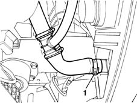
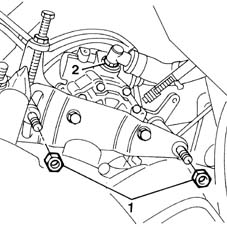
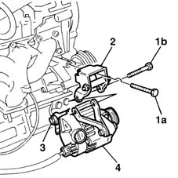
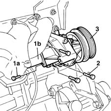

1088C10 water pump - r + r
- Path
- Procedures > 10 ENGINE UNIT > 1088 ENGINE COOLING > 1088C water pump and thermostat > 1088C10 water pump - r + r
- Kind
- repair procedure (removal / refitting; the operation number is the code)
- Applies to
- all engines; all production periods
- Interactive page
- https://sloeber94.github.io/elrnDB-fMltpl/en/#/2891329
Applies to: engines: 1.6 16v; all production periods
 Removing
Removing
 Refitting
RefittingPlace the car on a ramp.
Open the bonnet lid.
With the ignition key in the OFF position, disconnect the battery negative terminal.
4450B10 Front WHEEL (one) - R.R.
1. Place a container under the vehicle to collect the engine coolant, then disconnect the lower hose from the radiator.

Applies to: engines: 1.6 16v; all production periods
1072C44 exhaust manifold heat shield on bulkhead - r+r
1092B50 alternator/air conditioner compressor drive belt - adjust tension
1092C10 power steering and/or self-levelling suspension pump drive belt - r + r
1. Undo the power steering pump retaining nuts.
2. Move the power steering pump to one side without disconnecting both oil hoses.

Applies to: engines: 1.6 16v; all production periods
1. Undo bolt (1a) securing the bracket to the crankcase and bolt (1b) securing the water pump to the crankcase.
2. Remove the bracket.
Raise the ramp.
3. Loosen the lower alternator bolt.
4. Tip the alternator down to gain access to the water pump fastenings.

Applies to: engines: 1.6 16v; all production periods
1. Unscrew bolts (1a) securing filler pipe (1b).
2. Unscrew the water pump bolts.
3. Remove the water pump and mount.

Applies to: engines: 1.6 16v; all production periods
Refitting
RemovingFit the water pump and mount.
Tighten the bolts securing the water pump to the crankcase to torque.
 | Fastening | Component | Ø | Value (daNm) |
|---|---|---|---|---|
- | Bolt | COOLANT PUMP | M6 | 2.5 |
Tighten the bolts securing the water pump to the rigid filler pipe to torque.
| Fastening | Component | Ø | Value (daNm) |
|---|---|---|---|---|
- | Bolt | COOLANT PUMP | M6 | 2.5 |
Fit the bracket and tighten the bolts.
| Fastening | Component | Ø | Value (daNm) |
|---|---|---|---|---|
- | Bolt | ALTERNATOR SUPPORT | M10 | 5 |
Tip the alternator up and tighten the bolt securing it to the mount.
Tighten the alternator bolts to torque.
| Fastening | Component | Ø | Value (daNm) |
|---|---|---|---|---|
- | Bolt | ALTERNATOR ASSEMBLY | M12 x 1.25 | 8.5 |
Fit the power steering pum in its seat.
Tighten the power steering bolt and nut.
1092C10 power steering and/or self-levelling suspension pump drive belt - r + r
1092B50 alternator/air conditioner compressor drive belt - adjust tension
1072C44 exhaust manifold heat shield on bulkhead - r+r
Connect the lower radiator hose.
- 1088A10 Engine COOLANT - Check density' and top up level, if necessary
4450B10 Front WHEEL (one) - R.R.
With the ignition key in the off position, connect the battery negative terminal.
Close the bonnet lid.
Remove the vehicle from the ramp.
Applies to: engines: 1.9 JTD 8V; all production periods
Removing
Topics linked from this page (5)
- 1072C44 exhaust manifold heat shield on bulkhead - r+r
- 1088C12 water pump - r+r for versions with air conditioner
- 1092B50 alternator/air conditioner compressor drive belt - adjust tension
- 1092C10 power steering and/or self-levelling suspension pump drive belt - r + r
- 4450B10 Front WHEEL (one) - R.R.